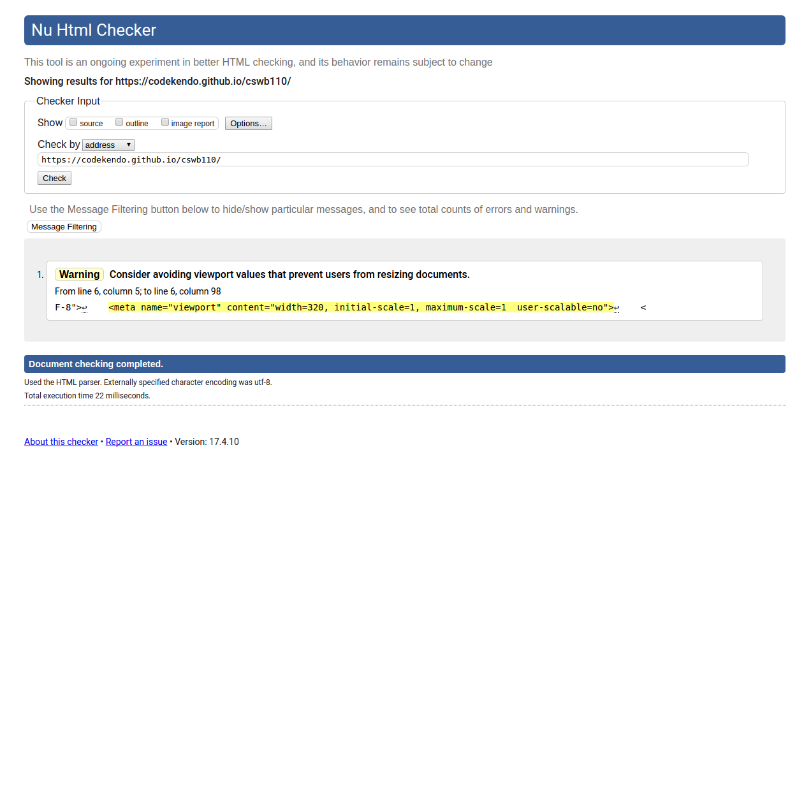

WebAIM Wave


Run an automated accessibility test on the home page of your school’s website. Use both the WebAIM Wave (http://wave.webaim.org) and ATRC AChecker (http://www.achecker.ca/checker) automated tests. Describe the differences in the way these tools report the results of the test. Did both tests find similar errors? Write a one-page report that describes the results of the tests. Include your recommendations for improving the website.
WebAIM Wave and ATRC AChecker gave two seperate results for their tests. WebAIM Wave gave a marked up version of my webpage filled with error icons for different views (contrast/no styles/styles ) of my errors. In contrast AChecker looks like a php application that spews errors within my html code and when you click on the underlined error links it gives back examples of the error message and shows user how it should look and how it should not look. You can also export the error report into a pdf document so you can email your findings to someone else. They base their guidelines with WCAG 2.0 specification.
I need to change my "A" tag font color to something that has more contrast for the user, give a better indicator for PDFS, I need to get rid of the table list and use an unordered list to display my content because AChecker spews out too many table errors.

The Web Page Analyzer (http://www.websiteoptimization.com/services/analyze) calculates download times for a web page and associated assets, along with providing suggestions for improvement. Visit this site and test your school’s home page (or a page assigned by your instructor). After the test is run, a web page speed report will display file sizes and include suggestions for improvement. Print out the browser view of this results page and write a one-page report that describes the results of the test and your own recommendations for improvement.
The site doesn't offer much recommendations for my website since I got a bunch of congratulations for my recommendations but I do think minifing my html code and gziping my assets should increase the page load speed.

The Dr. Watson site (http://watson.addy.com) offers free web page validation. Visit this site and test your school’s home page (or a page assigned by your instructor). After the test is run, a report is displayed with categories such as server response, estimated download speed, syntax and style analysis, spell-check, link verification, images, search engine compatibility (see Chapter 13), site link popularity (see Chapter 13), and source code. Print out the browser view of this results page and write a one- page report that describes the results of the test and your own recommendations for improvement.
The results on the Dr. Watson show that my page doesn't have any HTML syntax errors nor any problems with links or so I think... The only area that needs work is my SEO meta tag which doesn't tell robots or webcrawlers to follow my site. There is a problem with site either client side or server side with the server response and source code functionality. Downloads speeds are fast.